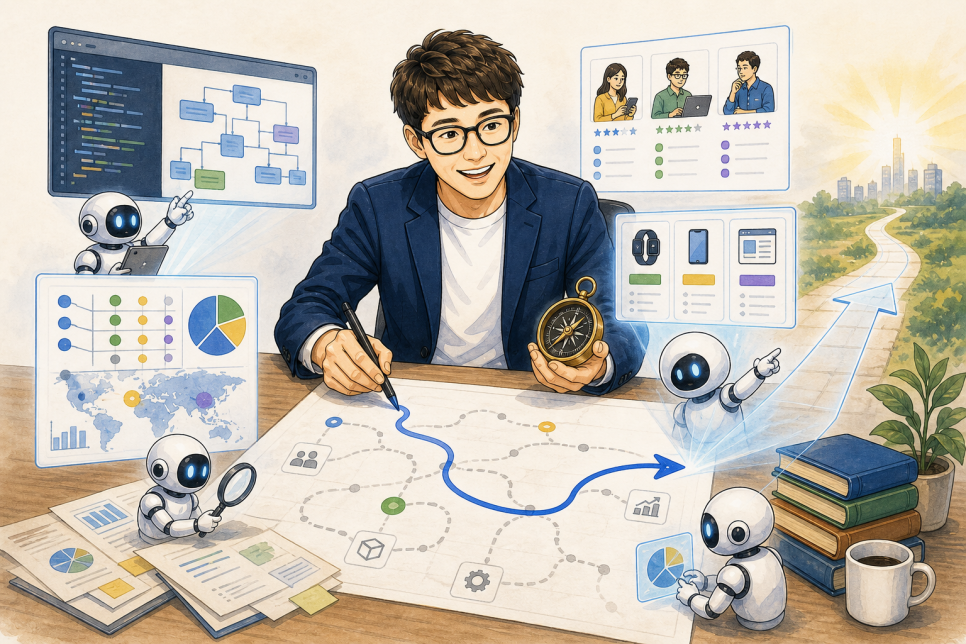

ALEXSOFT INSIGHTS
AI 시대에는 왜 오히려 시니어 개발자의 가치가 커질까요?
AI가 실행의 범위를 넓힐수록 경험을 바탕으로 무엇을 해야 하는지 판단하는 시니어의 역할이 중요해진다는 글.
지난 글에서 같은 AI를 사용해도 결과물의 수준이 달라지는 이유에 대해 이야기했습니다.
AI에게 일을 어떻게 설명하는지, 결과물의 어떤 부분을 문제로 보고, 어떤 방향으로 다시 수정시키는지에 따라 결과가 크게 달라진다는 내용이었습니다.
그 글을 적으며 자연스럽게 이런 생각으로 이어졌습니다.
"어쩌면 이것이 AI 시대에 시니어 개발자의 가치가 오히려 커지는 이유가 아닐까?"
AI가 코드를 작성하고 테스트도 해주는데 왜 경험 많은 개발자가 더 중요해지는지, 처음에는 조금 이해가 가질 않았습니다.
그런데 실제 업무에서 AI를 계속 사용해 보니, AI가 잘하는 일과 경험 있는 사람이 해야 하는 일이 조금씩 분명하게 구분되었어요.
AI가 가져가는 것은 주로 '실행'의 영역이다.
과거에는 시스템을 하나 만들려면 많은 사람이 작업을 나누어야 했습니다.
누군가는 업무를 분석하고, 구조를 설계하였으며, 누군가는 화면과 API를 만들고, 또 다른 누군가는 테스트와 문서를 담당했습니다.
지금은 경험 있는 개발자 한 사람이 AI를 활용해 이 가운데 상당 부분을 직접 수행할 수 있습니다.
코드를 만들고, 테스트 코드를 작성하고, 문서를 정리하고, 서로 다른 구현 방법을 비교하는 속도가 예전과는 비교할 수도 없이 빨라졌습니다.
하지만 일을 빠르게 실행하는 것과 무엇을 실행해야 하는지 판단하는 것은 다른 문제입니다.
저는 이 차이를 오래된 업무 시스템의 소스를 분석하면서 다시 한번 느꼈습니다.
코드가 있다고 해서 필요한 기능인 것은 아니었다.
제가 살펴보던 의료 정보 시스템은 과거의 다른 HIS를 참고해 개발된 시스템이었습니다.
그런데 그 과거 시스템 역시 더 오래된 3차 상급종합병원급의 HIS를 참고해 만들어진 것이었죠.
여러 세대의 시스템을 거치는 동안 이전 시스템의 기능과 코드가 상당 부분 함께 넘어온 셈입니다.
소스만 보면 꽤 완성도 있게 구현된 기능들이 있었습니다. 관련 서비스와 데이터 처리 로직도 존재했고, AI에게 분석을 맡기면 기능의 구조와 동작을 다이어그램과 함께 상당히 상세하게 설명해 주었습니다.
처음 분석 결과만 보면 현재도 사용할 수 있는 기능처럼 보였습니다.
하지만 시스템이 만들어진 배경과 실제 업무를 알고 있었기 때문에 한가지 의문이 들었죠.
이 기능이 지금도 정말 필요한 것일까?
좀 더 자세히 확인해 보니 해당 로직은 과거의 의료고시 법령과 당시 대형병원의 업무 프로세스를 기준으로 만들어진 것이었습니다.
현재 운영 중인 시스템의 업무 흐름과는 맞지 않았고, 일부만 수정해서 다시 사용하기도 어려웠습니다. 실제 호출 관계까지 확인해 보니 현재 시스템에서 사용할 일도 없는 기능들이었습니다.
AI가 코드를 잘못 읽은 것은 아니었습니다.
"이 코드가 어떻게 구현되어 있는가?"라는 질문에는 꽤 정확하게 답한 것이었습니다.
그러나 우리가 정말 알고 싶었던 것은 "이 기능이 지금도 필요한가?"였습니다.
하지만 이 질문에는 코드만으로 답할 수가 없습니다.
시스템이 만들어진 역사와 현재의 법령, 실제 업무 프로세스, 앞으로의 제품 방향까지 함께 알아야 하기 때문입니다.
AI는 시니어가 일할 수 있는 범위도 넓혀준다.
비슷한 경험은 사업 방향을 검토하는 과정에서도 있었습니다.
과거에는 시장과 경쟁 제품을 조사하고 앞으로의 사업 방향을 분석하는 일을 전문 사업관리 담당자가 별도로 진행하는 경우가 대부분이었습니다.
개발 PM이었던 저에게도 익숙한 영역과 그렇지 않은 영역이 분명히 있었고 가끔 그런 일을 직접 해야할 경우엔 상당히 고통스런 과정이었죠.
그런데 AI를 활용하면서 시장 자료 수집, 경쟁 제품 비교, 고객 요구 정리, 기술 변화 분석을 직접 연결해서 살펴볼 수 있게 되었습니다.
예전이라면 여러 사람이 몇 주에 걸쳐 조사하고 정리했을 범위를 하루 안에 검토하고, 사업 방향을 설정하는 데 필요한 수준까지 정리할 수 있었습니다.
그렇다고 AI 가 사업의 방향을 대신 정해 준 것은 아닙니다.
어떤 시장을 비교해야 하는지, 수많은 정보 가운데 무엇이 중요한지, 기술적으로 도입에 어려움은 없는지, 우리가 잘할 수 있는 영역인지를 판단하려면 그동안 쌓아온 개발과 업무 경험이 필요했습니다.
AI가 깊이 있는 조사와 정리를 빠르게 제공해 주자, 기존의 경험이 과거보다 훨씬 넓은 범위에서 사용되기 시작한 것입니다.

AI는 경험의 차이를 없애기보다 오히려 증폭시키고 있다.
AI가 없던 시기에는 경험이 많아도 한 사람이 직접 처리할 수 있는 작업량에는 분명한 한계가 있었습니다.
조사하고, 구현하고, 비교하고, 문서로 정리하는 데 시간이 분명 필요한데 역설적으로 경험이 많아질 수록 조직 관리와 같은 업무 비중이 높아지며 작업할 시간은 더 없어집니다.
AI는 이 실행 시간을 크게 줄여줍니다.
그러면 경험 있는 사람은 문제를 정의하고 방향을 정하는 데 더 많은 시간을 쓸 수 있습니다. 필요한 조사는 AI에게 맡기고, 결과를 검증하고, 문제가 있으면 또 다른 관점에서 분석시킬 수도 있습니다.
결국 AI가 강력해질수록 그 AI에게 무엇을 시키고 결과를 판단할 수 있는 사람의 영향력도 함께 커지게 된 것입니다.
그래서 나는 AI가 시니어와 주니어의 차이를 줄여줄 것이라고 생각하지 않고, 어떤 면에서는 오히려 경험의 차이를 더 크게 만들 수도 있다고 생각합니다.
다만 여기서 말하는 시니어는 단순히 경력이 오래된 사람을 뜻하는 것은 아닙니다.
직접 겪어본 일을 통해 더 나은 질문을 할 수 있고, 코드 밖의 맥락을 이해하며, AI의 결과에 책임지고 판단할 수 있는 사람에 가깝습니다.
그렇다면 주니어는 필요 없어지는 걸까?
기업의 단기적인 관점에서는 경험 있는 사람 한 명과 AI의 조합이 매력적으로 보일 수 있습니다.
과거에 주니어 개발자들이 맡았던 구현과 테스트 수행 등 업무의 상당 부분을 AI가 빠르게 처리할 수 있기 때문입니다.
하지만 장기적으로 보면 여기에는 큰 문제가 하나 있습니다. 지금의 시니어들이 처음부터 시니어였던 것은 아니기 때문입니다.
작은 기능을 만들고, 실수하고, 장애를 겪고, 잘못된 설계를 고쳐보고, 다른 사람의 리뷰를 받으면서 조금씩 판단력을 쌓아왔습니다.
주니어에게 이런 경험을 할 기회를 주지 않는다면 미래의 시니어는 어디에서 나올까요?
일하는 방식이 바뀌었으니 주니어를 성장시키는 방식도 달라져야 합니다.
예전처럼 이미 정해진 설계에 따라 단순한 코드를 반복해서 작성하게 하는 것만으로는 이 시대에 필요한 역량을 빠르게 갖출 수 없습니다.
AI가 만든 코드를 직접 검증하고, 왜 이런 구조가 필요한지 설명하게 하며, 경험 있는 사람과 함께 실제 운영 결과까지 살펴보게 해야 합니다.
작은 범위라도 현업과 고객의 요구사항을 이해하고, 해결해야 할 문제를 정의하고, 이를 기획하고 구현해 실제 제품으로 이어지는 전체 과정을 경험할 수 있어야 합니다.
앞으로 주니어에게 필요한 것은 단순히 코드를 많이 작성하는 경험이 아니라, 하나의 문제를 이해하고 해결한 뒤 그 결과까지 책임져 보는 경험이 될 것이라고 생각합니다.
시니어의 가치는 사라지는 것이 아니라 바뀌고 있다.
AI가 발전할수록 사람이 직접 작성하는 코드의 양은 줄어들고 있습니다.
하지만 무엇을 만들어야 하는지 판단하고, 복잡한 문제를 구조화하고, 기술과 업무와 사업을 연결하며, 결과가 올바른지 검증하는 일은 여전히 남아 있습니다.
오히려 AI가 실행을 빠르게 해줄수록 잘못된 방향으로 갔을 때의 속도도 빨라져 나쁜 개발자는 더 나쁜 방향으로 갑니다.
그래서 방향을 정하고 멈춰야 할 때를 아는 사람의 역할이 더 중요해지고 있습니다.
나는 AI가 시니어의 경험을 대체하는 도구라기보다, 그 경험이 미치는 범위를 크게 넓혀주는 도구에 가깝다고 생각합니다.
AI 시대에 시니어의 가치가 커지는 이유도 여기에 있지 않을까요?
저도 AI에게 모든 판단을 맡기기보다, 지금까지 쌓아온 소프트웨어 개발과 업무 분석, 사업관리 경험을 AI와 결합해 더 빠르고 더 나은 결과를 만드는 방법을 계속 고민하고 있습니다.